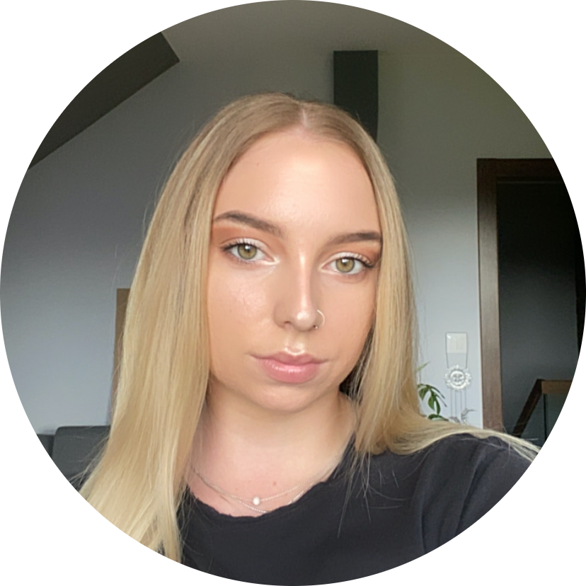

|  | Paulina Kozaczek🎓Loghborough University Graduate/ 💻 Future Frontend Web Developer I am a recent graduate from Loughborough University with a 2.1 in International Business and a Diploma in International Studies. I have recently decided on a career change as I found my new passion for tech and I am currently learning UX/UI design and frontend web development. |
| Dates | Work |
|---|---|
| Jul 2015 - Aug 2015 | Recruitment Intern |
| Sep 2017 - Jun 2018 | Bar Staff |
| Microsoft Office package | ★★★★☆ | Polish | ★★★★★ |
| Painting | ★★★★☆ | Web Development | ★☆☆☆☆ |